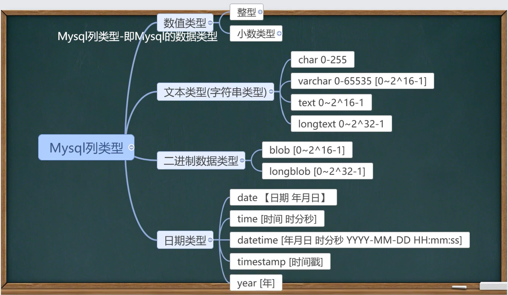

MySQL
本文最后更新于：2023年7月4日 晚上
彻底卸载MySQL（解压版）
1.关闭服务
以管理员的身份运行cmd，使用 net stop mysql 命令，停止服务。
注意：得要管理员的身份，不然权限不够，无法停止服务。


2.卸载服务
输入命令 mysqld -remove mysql 卸载服务。

注意：如果不能成功卸载服务，请在安装的MYSQL文件夹下的bin目录下执行
上述命令 mysqld -remove mysql
3.删除MYSQL文件
将安装的MySQL文件夹删掉。如果担心卸不干净，可以前往控制面板的卸载程序里面看看是否还有MYSQL，有的话就把与MYSQL相关的也卸载了。

4.删除注册表的MYSQL服务
运行 win+R，输入regedit,打开注册表。

打开注册表之后，删除注册表中的MYSQL服务：
HKEY_LOCAL_MACHINE\SYSTEM\ControlSet001\Services\Eventlog\Application\MySQL
HKEY_LOCAL_MACHINE\SYSTEM\ControlSet002\Services\Eventlog\Application\MySQL
HKEY_LOCAL_MACHINE\SYSTEM\CurrentControlSet\Services\Eventlog\Application\MySQL
注意：也许注册表中不是或者不只有ControlSet001、ControlSet002，也可能是ControlSet006、007或者如下图所示之类，反正删的时候都删了就好了。这里要细心一点看，不然容易删漏哦！

这样就可以把解压版的MYSQL卸载干净啦，注意哦，这是卸载解压版的 ，不是安装版的哦！
MySQL 的安装与配置
[MySQL8安装及环境配置](https://blog.csdn.net/weixin_45311418/article/details/123018863#:~:text=MySQL8安装及环境配置 1、安装mysql 2、编写mysql配置文件,3、初始化MySQL数据库 4、登录MySQL数据库 5、修改mysql密码 6、配置环境变量)
注释快捷键：shift+ctrl+c
取消注释快捷键：shift+ctrl+r
MySQL 8 忘记密码？
Mysql8.0忘记 root 密码, 如何修改?why_here的博客-CSDN博客
Mysql 中文乱码问题
彻底解决mysql中文乱码_数据库乱码_carl-zhao的博客-CSDN博客
使用命令行窗口连接 MYSQL 数据库
1 | |
数据库三层结构
重点：MySQL数据库，普通表的本质仍然是文件
所谓安装Mysql数据库，就是在主机安装一个数据库管理系统（DBMS），这个管理程序可以管理多个数据库
DBMS——database manage system
一个数据库重可以创建多个表，以保存数据（信息）
数据库管理系统（DBMS）、数据库和表的关系如图所示：
数据在数据库中的存储方式
SQL 语句分类
- DDL：数据定义语句 [create 表，库…]
- DML：数据操作语句 [增加 insert，修改 update，删除 delete]
- DQL：数据查询语句 [select]
- DCL：数据控制语句 [管理数据库：比如用户权限 grant revoke]
创建数据库
1 | |
说明：
- CHARACTER SET：指定数据库采用的字符集，如果不指定字符集，默认utf8
- COLLATE：
- 指定数据库字符集的校对规则（常用的 utf8_bin（区分大小写）、utf8_general_ci（不区分大小写））
- 注意默认是 utf8_general_ci
1 | |
查看、删除数据库
显示数据库语句：
SHOW DATABASES
显示数据库创建语句：
SHOW CREATE DATABASE db_name
数据库删除语句（慎用）：
DROP DATABASE [IF EXISTS] db_name
1 | |
备份&恢复数据库
备份数据库（注意：在DOS命令行中执行）
mysqldump -u 用户名 -p密码 -B 数据库1 数据库2 数据库n > 文件名.sql
若没有填密码，回车后会提示输入密码
恢复数据库（注意：进入SQLyog再执行）
Source 文件名.sql
1 | |
备份&恢复数据库的表
备份数据库的表
mysqldump -u 用户名 -p密码 数据库 表1 表2 表n > d:\\文件名.sql
创建表
图形化/指令
1 | |
案例：
1 | |
Mysql 常用数据类型(列类型)

数值型(整数)的基本使用
使用规范：在能够满足需求的情况下，尽量选择占用空间小的
1 | |
数值型(bit)的使用
- 基本使用
- mysql> create table t05 (num bit(8));
- mysql> insert into t05 (1,3);
- mysql> insert into t05 values (2,65);
- 细节说明
- bit 字段显示时，按照 位 的方式显示
- 查询的时候仍然可以用使用 添加的数值
- 如果一个值只有 0、1 可以考虑使用 bit(1)，可以节约空间
- 位类型：M指定位数，默认值1，范围1-64
- 使用不多
1 | |
数值型(小数)的基本使用
FLOAT/DOUBLE [UNSIGNED]
FLOAT 单精度； DOUBLE 双精度
DECIMAL[M,D] [UNSIGNED]
- 可以支持更加精确的小数位。M是该小数位数（精度）的总数，D是小数点（标度）后面的位数
- 如果D是0，则值没有小数点或分数部分。
- M最大65，D最大30；如果M被省略，默认是10；如果D被省略，默认是0
- 建议：如果希望小数的精度高，推荐使用 decimal
1 | |
字符串的基本使用
CHAR(size)
固定长度字符串 最大 255 字符
VARCHAR(size) 0~65535
可变长度字符串 最大 65532 字节 utf8（65535/3） GBK（65535/2）
说明：utf8编码最大21844字符（65535/3），1-3 个字节用于记录大小
utf8 中的 varchar(size) 的 size = （65535-3）/ 3 = 21844
gbk 中的 varchar(size) 的 size = （65535-3）/ 2 = 32766
1 | |
字符串使用细节
- 细节1：
- char(4) //这个4表示字符数（最大255），而不是字节数，不管是中文还是字符都是放4个，按字符计算
- varchar(4) //这个4表示字符数，不管是字母还是中文都以定义好的表的编码来存放数据
- 细节2：
- char(4) 是定长（固定大小），即使只存入 ‘aa’，也会占用 分配的4个字符的空间
- varchar(4) 是变长（变化的大小），如果只存入 ‘aa’，实际占用的空间大小并不是4个字符，而是按实际占用空间来分配（补充说明：varchar本身还需要占用1-3个字节来记录存放内容长度）（L + 1~3字节）
- 细节3：
- 如果数据是定长，推荐使用 char ，比如md5的密码、邮编、手机号、身份证号码等
- 如果一个字段的长度不确定，推荐使用 varchar ，比如留言、文章等
- 查询速度：char > varchar
- 细节4：
- 存放文本时，也可以使用 Text 数据类型，可以将 TEXT 列视为 VARCHAR 列，注意 TEXT 不能有默认值。大小 0-2^16 字节；如果希望存放更多字符，可以选择 MEDIUMTEXT 0-2^24 或者 LONGTEXT 0-2^32
1 | |
日期类型的基本使用
细节说明：TimeStamp 在 Inser 和 update 时，会自动更新
1 | |
创建表练习
1 | |
修改表-基本介绍
1 | |
数据库 增删改查 语句
- Insert 语句：添加数据
- Update 语句：更新数据
- Delete 语句： 删除数据
- Select 语句：查找数据
Insert 语句
使用 INSERT 语句向表中插入数据
1
2INSERT INTO table_name [(column [, column...])]
values (value [, value...]); -- value 与 column 一一对应
1 | |
细节说明
插入的数据应与字段的数据类型相同（除非能进行自动类型转换）
比如 把 ‘abc’ 添加到 int 类型会报错，但 ‘30’ 可以添加到 int 类型（自动类型转换）
数据的长度应在列的规定范围内（不能将一个长度为80的字符串加到长度为40的列中）
在 values 中列出的数据位置必须与被加入的列的排列位置相对应
字符和日期型数据应包含在单引号内
列可以插入空值（前提是该字段允许为空）（insert into table value(null)）
insert into tab_name (列名…) values (), (), () 形式可添加多条记录
如果是给表中的所有字段添加数据，可以不写前面的字段名称
默认值的使用，当不给某个字段值时，如果有默认值就会添加该默认值，否则会报错
如果某个列 没有指定 not null ，那么当添加数据时，如果没有给定值，会默认给 NULL
如果希望指定某个列的默认值，可以在创建表时指定（字段 类型 NOT NULL DEFAULT 默认值）
update 语句
使用 update 语句修改表中数据
1
2
3UPDATE tb1_name
SET col_name1 = expr1 [, col_name2 = expr2...]
[WHERE where_definition] -- 如果不写WHERE语句，相当于把表的所有记录均进行修改使用细节
- UPDATE 语句可以用新值更新原有表行中的各列
- SET 子句指示要修改 哪些列 和 要给予哪些值
- WHERE 子句指定应更新哪些行，如果没有 WHERE 语句，则更新所有行
- 如果需要修改多个字段，可以通过 set 字段1=值1, 字段2=值2 … …
1 | |
delete 语句
使用 delete语句删除表中数据
1
2delete from tab1_name
[WHERE where_definition] -- 如果不写WHERE, 会把表中所有数据删除使用细节
- 如果不使用 where 子句，将删除表中所有数据
- delete 语句不能删除某一列的所有值（可使用 update 设为 null 或 ‘’）
- 使用 delete 语句仅删除记录，不删除表本身。 如果要删除表，使用 drop table 表名
1 | |
select 语句
写 sql , 先写一个简单，然后加入过滤条件…
基本语法
1 | |
1 | |
使用表达式对查询的列进行运算
1 | |
在 select 语句中可使用 as 语句（起别名）
1 | |
1 | |
在 where 子句中经常使用的运算符
1 | |
使用 order by 子句排序查询结果
1 | |
- order by 指定排序的列，排序的列既可以是表中的列名，也可以是 select 语句后指定的别名
- acs 升序（默认），dsec 降序
- order by 子句应位于 SELECT 语句的结尾
1 | |
合计/统计函数
count 返回行的总数
1 | |
1 | |
sum 合计函数
SUM 函数返回满足 where 条件的行的和（一般用在数值的列上）
1 | |
- 注意：
- sum 仅对数值起作用
- sum 对多列求和时，”,” 号不能少
1 | |
avg 平均值
AVG 函数返回满足 where 条件的一列的平均值
1 | |
1 | |
max / min
MAX / MIN 函数返回满足 where 条件的列的最大/最小值
1 | |
1 | |
使用 group by 子句对列进行分组
1 | |
- group by 用于对查询的结果分组统计
使用 having 子句对分组后的结果进行过滤
1 | |
- having 子句用于限制分组显示结果
1 | |
字符串相关函数
DUAL 亚元表，系统表，可以作为测试表使用
注意：字串位置从 1 开始
CHARSET(str) 返回字符串字符集
CONCAR(string2 [,…]) 连接字符串（将多个列拼接成一列）
INSTR(string, substring) 返回substring在string中出现的位置，没有则返回0
UCASE(string2) 转换成大写
LCASE(string2) 转换成小写
LEFT(string2, length) 从string2中的左边起取length个字符
RIGHT(string2, length) 从string2中的右边起取length个字符
LENGTH(string) string长度**[按照字节]**
REPLACE(str, search_str,replace_str) 在str中用replace_str替换search_str
STRCMP(string1,string2) 逐字符比较两字符串大小
substring(str, position [, length]) 从str的position开始（从1开始计算），取length个字符
LTRIM(srting) RTRIM(string) TRIM(string)
去除前端空格、后端空格、双端空格
1 | |
数学相关函数
- abs(num) 绝对值
- bin(decimal_number) 十进制转二进制
- ceiling(num2) 向上取整，得到比 num2 大得最小整数
- conv(num2, form_base, to base) 进制转换
- floor(num2) 向下取整，得到比 num2 小得最大整数
- format(number, decimal_places) 保留小数位数（四舍五入）
- hex(DecimalNumber) 转十六进制
- least(num, num2 [, …]) 求最小值
- mod(numerator, denominator) 求余
- rand([seed]) rand([seed]) 其范围为 0 <= v <= 1.0，加了seed随机数就会固定
1 | |
时间日期相关函数
- current_date() 当前日期
- current_time() 当前时间
- current_timestamp() 当前时间戳
- date(datetime) 返回datetime的日期部分
- date_add(date, interval d_value d_type) 在date中加上日期或事件
- date_sub(date, interval d_value d_type) 在date上减去一个时间
- datediff(date1, date2) 两个日期差（结果是天）
- timediff(date1, date2) 两个时间差（结果是时分秒）
- now() 当前时间
- YEAR | MONTH | DAY | DATE(datetime)
- unix_timestamp() 返回1970-01-01 到现在的秒数
- from_unixtime() 年月日
细节说明：
- date_add() 和 date_sub() 中的 interval 后面可以是 year minute second day 等
- datediff(date1, date2) 得到的是 date1 - date2 的天数，因此可以取负数
- 上面参数中的的 ‘date’ 的日期类型可以是 date, datetime, timestamp
- 在实际开发中，经常使用 int 来保存一个 unix 时间戳，然后使用 from_unixtime() 进行转换
1 | |
加密和系统函数
- user() 查询用户，可以查看登录到 mysql 的有哪些用户，以及登录的 ip
- database() 查询当前使用的数据库名称
- md5(str) 为字符串算出一个 md5 32 的字符串，常用于（用户密码）加密
- password(str) 从原文密码 str 计算并返回密码字符串，通常用于对 mysql 数据库的用户密码加密
1 | |
流程控制函数
- if(expr1, expr2, expr3) 如果 expr1 为 true，则返回 expr2，否则返回 expr3
- ifnull(expr1, expr2) 如果 expr1 不为 NULL，则返回 expr1，否则返回 expr2
- select case when expr1 then expr2 when expr3 then expr4 else expr5 end; [类似多重分支]
1 | |
mysql 表查询–加强
介绍
mysql表查询 —— 加强
- 使用 where 子句
- 如何查找 1992.01.01 后入职的员工
- 如何使用 like 操作符
- %：表示 0 到多个字符
- _ ：表示单个字符
- 如何显示首字符为 S 的员工姓名和工资
- 如何显示第三个字符为大写 O 的所有员工的姓名和工资
- 如何显示没有上级的雇员的情况
- 查询表结构
- 使用 order by 子句
- 如何按照工资的从低到高的顺序，显示雇员的信息
- 按照部门号升序雇员的工资降序排列，显示雇员信息
1 | |
分页查询
基本语法
select … limit start, rows
表示从 start + 1 行开始取，取出 rows 行，start 从 0 开始计算
按雇员的 id 号升序取出，每页显示 3 条记录，请分别显示 第 1 页，第 2 页，第 3 页
1 | |
使用分组函数和分组子句 group by
1 | |
数据分组的总结
如果 select 语句同时包含有 group by，having，order by，limit
那么它们的顺序是 group by，having，order by，limit 不能颠倒顺序
1 | |
1 | |
mysql 多表查询
多表查询是指基于两个或两个以上的表查询。在实际应用中，查询单个表可能不能满足需求。
解决多表问题的关键就是要写出正确的过滤条件 WHERE
提示：多表查询的过滤条件不能少于 表的个数 - 1，否则会出现笛卡尔集
- 默认情况下，当同时查询两个表（m和n）时，会把两个表中的内容进行组合，得到 m*n 条记录
这样的多表查询默认处理返回的结果称为 笛卡尔集
解决多表问题的关键就是要写出正确的过滤条件 WHERE
提示：多表查询的过滤条件不能少于 表的个数-1，否则会出现笛卡尔集
当需要指定显示某个表的共同拥有的列时，需要 表.列表
自连接
自连接是指在同一张表的连接查询（将同一张表看作两张表）
- 自连接的特点
- 把同一张表当做两张表使用
- 需要给表取别名 ， 语法：表名 表别名
- 列名不明确，可以指定列的别名 ， 语法：列名 as 列的别名
1 | |
mysql 表子查询
子查询是指嵌入在其它sql语句中的select语句，也叫嵌套查询
单行子查询
只返回一行数据的子查询语句
1 | |
多行子查询
返回多行数据的子查询（使用关键字 in）
1 | |
子查询当做临时表使用
1 | |
all 和 any
1 | |
多列子查询
多列子查询指的是查询返回多个列数据的子查询语句
1 | |
from 子句中使用子查询
1 | |
表复制与表去重
为了对某个sql语句进行效率测试，我们需要海量数据时，可以使用此法为表创建海量数据
1 | |
合并查询
有时在实际应用中，为了合并多个 select 语句的结果，可以使用集合操作符号 union，union all
union all
该操作符用于取得两个结果集的并集，当使用该操作符时，不会取消重复行
union
该操作符与 union all 相似，但是会自动去掉结果集中的重复行
1 | |
mysql 表 外连接
使用不多
左外连接（左侧的表完全显示）
select … from 表1 left join 表2 on 条件 （表1就是左表，表2就是右表）
右外连接（右侧的表完全显示）
select … from 表1 right join 表2 on 条件 （表1就是左表，表2就是右表）
1 | |
mysql 约束
基本介绍
约束用于确保数据库的数据满足特定的商业规则
在mysql中，约束包括：not null、unique、primary key、foreign key、check 五种
primary key(主键)
1 | |
用于唯一标识表行的数据，当定义主键约束后，该列的值不能重复
细节说明：
- primary key 的值不能重复而且不能为 null
- 一张表最多只能有一个主键，但可以时复合主键
- 主键的指定方式 有两种
- 直接在字段名后指定：字段名 primary key
- 在表定义最后写 primary key(列名);
- 使用desc表名，可以看到 primary key 的情况
- 提醒：在实际开发中，每个表往往都会设计一个主键
1 | |
not null(非空)
如果在列上定义了 not null，那么当插入数据时，必须为列提供数据
1 | |
unique(唯一)
当定义了唯一约束后，该列的值是不能重复的
1 | |
细节说明：
- 如果没有指定 not null，则 unique 字段可以有多个 null
- 一张表可以有多个 unique 字段
1 | |
foreign key(外键)
用于定义主表和从表之间的关系：外键约束要定义在从表上，主表则必须具有主键约束或是unique约束。
当定义外键约束后，要求外键列数据必须在主表的主键列存在或是为null
1 | |
细节说明：
- 外键指向的表的字段，要求是 primary key 或者是 unique
- 表的类型是 innodb 才支持外键
- 外键字段的类型要和主键字段的类型一致（长度可以不同）
- 外键字段的值，必须在主键字段中出现过，或者为null（如果可以为null的话）
- 一旦建立主外键的关系，数据就不能随意删除了（需要先把外键相关内容先删除才能删除相应的主键内容）
1 | |
check
用于强制行数据必须满足的条件，假定在 sal 列上定义了 check 约束，并要求 sal 列值在 1000 ~ 2000 之间，如果不在 1000 ~ 2000 之间就会提示错误。
提示：oracle 和 sql server 均支持 check，但是 MySQL5.7 目前还不支持 check，只是做语法校验，但不会生效
在mysql中实现check的功能，一般是在程序中控制，或者通过触发器完成。
1 | |
1 | |
自增长
在某张表中，存在一个列，在添加记录时，能够自动增长
1 | |
添加自增长的字段方式
1 | |
细节说明：
一般来说自增长是和 primary key 配合使用的
自增长也可以单独使用（但是需要配合一个 unique）
自增长修饰的字段是为整数型的（虽然小数也可以但是很少这样使用）
自增长默认从 1 开始，也可以通过如下命令修改
1
alter table 表名 auto_increment = 新的开始值;如果在添加数据时，给自增长字段（列）指定的有值，则以指定的值为准，如果指定了自增长，一般来说，就按自增长的规则来添加数据，后续添加的值会先找到最大值再继续增长
1 | |
mysql 索引
说起提高数据库性能，索引是最物美价廉的东西。不需要加内存，不需要改程序，不需要调sql，查询速度就可以提高千百倍
索引快速入门
1 | |
索引的原理
没有索引为什么会慢？
因为全表扫描
使用索引为什么会快？
形成一个索引的数据结构，比如二叉树
索引的代价
- 磁盘占用
- 对 dml （update delete insert）语句的效率影响
索引的类型
主键索引（primary key），主键就是一种索引
唯一索引（unique），
普通索引（index），
全文索引（fulltext）[适用于MyISAM]
一般开发不使用mysql自带的全文索引，而是使用 全文搜索 Solr 和 ElasticSearch
unique索引 和 普通索引（如果某列的值保证不重复，则优先使用unique索引）
1 | |
索引使用
添加索引
1
create [unique] index index_name on tbl_name(col_name[(length)]) [asc | desc], ...);添加主键（索引）
1
alter table 表名 add primary key(列名, ...);删除索引
1
2
3drop index index_name on tbl_name;
alter table table_name drop index index_name;删除主键索引 比较特别：
1
alter table t_b drop primary key;查询索引（三种方式）
1
2
3show index(es) from table_name;
show keys from table_name;
desc table_name;小结：那些列上适合使用索引
- 较频繁作为查询条件的字段应该创建索引
- 唯一性太差的字段不适合单独创建索引，即使频繁作为查询条件（如 性别）
- 更新非常频繁的字段不适合创建索引
- 不会出现在 where 子句中的字段不改创建索引
1 | |
mysql 事务
事务用于保证数据的一致性，它由一组相关的 dml 语句组成，该组的 dml 语句要么全部成功，要么全部失败
如：转账就要用事务来处理，来保证数据的一致性
事务和锁
当执行事务操作时（dml语句），MySQL会在表上加锁，防止其它用户改表的数据。
MySQL 数据库控制台事务的几个重要操作
- start transaction 开始一个事务
- savepoint 保存点名 设置保存点
- rollback to 保存点名 回退事务
- rollback 回退全部事务
- commit 提交事务，所有的操作生效，不能回退
1 | |
回退事务
在介绍回退事务前，先介绍一下保存点（savepoint），保存点是事务中的点，用于取消部分事务，当结束事务时，会自动删除该事务所定义地所有保存点。
当执行回退事务时，通过指定保存点ke以回退到指定地点
提交事务
使用 commit 语句可以提交事务，当执行了 commit 语句之后，会确认事务的变化、结束事务、删除保存点、释放锁，数据生效。
当使用 commit 语句结束事务后，其它会话（其它连接）将可以查看事务变化后的新数据（所有数据正式生效）
细节说明
- 如果不开始事务，默认情况下，dml 操作时自动提交的，不能回滚
- 如果开始一个事务，没有创建保存点，可以执行rollback，默认就是回退到事务开始的状态
- 可以在事务中创建多个保存点
- 在事务没有提交前，可以选择回退到哪个保存点
- MySQL 的事务机制需要 innodb 的存储引擎才可以使用，myisam 不支持
- 开始一个事务 start transaction 或 set autocommit = off;
1 | |
事务隔离级别
事务隔离级别介绍
- 多个连接开启各自事务操作数据库中的数据时，数据库系统要负责隔离操作，以保证各个连接在获取数据时的准确性。
- 如果不考虑隔离性，可能会引发如下问题：
- 脏读
- 不可重复读
- 幻读
查看事务隔离级别
- 脏读（dirty read）：一个事务读取另一个事务尚未提交的修改（update, insert, delete）
- 不可重复读（nonrepeatable read）：同一查询在同一事务中多次进行，由于其它提交事务所做的修改或删除，每次返回不同的结果集，此时发生不可重复读
- 幻读（phantom read）：同一查询在同一事务中多次进行，由于其它提交事务所做的插入操作，每次返回不同的结果集，此时发生幻读
- 不可重复读 和 幻读 都是某个事务提交后在另一个仍未提交的事务中出现的问题
隔离级别：事务与事务之间的隔离程度
相关操作：
查看当前会话隔离级别
1
select @@tx_isolation;查看系统当前隔离级别
1
select @@global.tx_isolation;设置当前会话隔离级别
1
set session transaction isolation level repetable read;设置系统当前隔离级别
1
set global session transaction isolation level repetable read;mysql 默认的事务隔离级别是 repeatable read，一般情况下，没有特殊要求，没有必要修改
（因为该级别可以满足绝大部分项目需求）
全局修改：修改my.ini配置文件，在最后加上 transaction-isolation = READ-UNCOMMITTED;
1
2
3# 可选参数有：READ-UNCOMMITTED, READ-COMMITTED, REPEATABLE-READ, SERIALIZABLE
[mysqld]
transaction-isolation = READ-UNCOMMITTED;
1 | |
mysql 事务的 ACID 特性
原子性（Atomicity）
原子性是指事务是一个不可分割的工作单位，事务中的操作要么都发生，要么都不发生
一致性（Consistency）
事务必须使数据库从一个一致性状态变换到另外一个一致性状态
隔离性（Isolation）
书屋的隔离性是多个用户并发访问数据库时，数据库为每一个用户开启的事务，不能被其它事务的操作数据所干扰，多个并发事务之间要相互隔离
持久性（Durability）
持久性是指一个事务一旦被提交，它对数据库中数据的改变就是永久性的，接下来即使数据库发生故障也不应该对其有任何影响
mysql 表类型和存储引擎
基本介绍
MySQL 的表类型由存储引擎决定，主要包括 MyISAM、innoDB、Memory等
MySQL 数据表主要支持六种类型，分别是：
CSV、Memory、ARCHIVE、MRG_MYISAM、MYISAM、InnoBDB
这六种又分为两类，一类是 “事务安全型” ，比如InnoDB;
其余都属于第二类，称为 “非事务安全型”
主要的存储引擎/表类型特点
细节说明
重点介绍三种: MyISAM、InnoDB、MEMORY
- MyISAM 不支持事务，也不支持外键，但是访问速度块，对事务完整性没有要求
- InnoDB 存储引擎提高了具有提交、回滚和崩溃恢复能力的事务安全。但是比起 MyISAM 存储引擎、InnoDB 写的处理效率差一些，并且会占用更多的磁盘空间以保留数据和索引
- MEMORY 存储引擎使用存在内存中的内容来创建表。每个 MEMORY 表只实际对应一个磁盘文件。MEMORY类型的表访问非常的快，因为它的数据是放在内存中的，并且默认使用 HASH 索引。但是一旦 MySQL 服务关闭，表中的数据就会丢失，但表的结构还在。
如何选择表的存储引擎
如果应用不需要事务，处理的只是基本的CRUD操作，那么MyISAM是不二选择，速度快
如果需要支持事务，选择 InnoDB
Memory 存储引擎就是将数据存储在内存中，由于没有磁盘 I/O 的等待，速度极快。
但由于是内存存储引擎，所做的任何修改在服务器重启后都将消失（用法如：用户的在线状态）
修改存储引擎
1 | |
\
本章代码
1 | |
视图(view)
看一个需求
基本概念
视图是一个虚拟表，其内容由查询定义。同真实的表一样，视图包含列，其数据来自对应的真实表（基表）
视图和基表的关系（映射） [示意图]

视图的基本使用
- create view 视图名 as select语句 – 创建视图
- alter view 视图名 as select语句 – 更新为新的视图
- show create view 视图名
- drop view 视图名1, 视图名2 – 删除视图
视图细节讨论
- 创建视图后，到数据库去看，对应视图只有一个视图结构文件（形式：视图名.frm）
- 视图的数据变化会影响到基表，基表的数据变化也会影响到视图 [insert update delete]
- 视图中可以再使用视图，数据仍然来自基表
1 | |
视图最佳实践
1 | |
mysql 管理
Mysql 用户
mysql 中的用户，都存储再系统数据库 mysql 中的 user 表中
其中 user 表的重要字段说明：
- host：允许登录的 “位置” ，localhost 表示该用户只允许本机登录，也可以指定 ip 地址，如：192.168.1.100
- user：用户名
- authentication_string：密码，是通过 mysql 的 password() 函数加密之后的密码
创建用户
1 | |
删除用户
1 | |
用户修改密码
修改自己的密码
1
set password = password('密码');修改他人的密码（需要有修改用户密码的权限）
1
set password for '用户名' @ '登录位置' = password('密码');
mysql 中的权限
给用户授权
基本语法：
1 | |
说明：
- 权限列表，多个权限用逗号分开
- grant select on …
- grant select, delete, create on …
- grant all [privileges] on …
- 特别说明
- *.*：代表本系统中所有数据库的所有对象（表、视图、存储过程）
- 库.*：表示某个数据库中的所有数据对象（表、视图、存储过程等）
- identified by 可以省略，也可以写出
- 如果用户存在，就是修改该用户的密码
- 如果该用户不存在，就是创建该用户
回收用户授权
1 | |
权限生效指令
如果权限没有生效，可以执行下面命令
1 | |
细节说明
在创建用户的时候，如果不指定 Host，则为 % ，% 表示所有 IP 都有连接权限
1
create user xxx;也可以这样指定
1
create user 'xxx' @ '192.168.1.%' -- 表示xxx用户在192.168.1.*的IP可以登录 mysql删除用户的时候，如果 host 不是 % ，需要明确指定 ‘用户 @ ‘host值’
1 | |
课堂练习题
1 | |